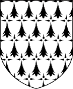

Hertiginna av Normandie. Blev högst 35 år.
982 Bretagne, Frankrike. [1]
1017 Bretagne, Frankrike. [1]
Judit av Bretagne, född 982, död 1017, var en hertiginna av Normandie, gift med hertig Rickard II av Normandie. Hon var dotter till hertig Conan I av Bretagne och Ermengarde av Anjou.
Äktenskapet arrangerades som en dubbelallians mellan Bretagne och Normandie: hennes bror Georg gifte sig samtidigt med hennes makes syster Hedvig. Vigseln ägde rum i Mont Saint-Michel år 996. Hon fick sex barn under äktenskapet. Som morgongåva förlänades hon tre områden: Bernay vid floden Charentonne, som omfattade 21 kyrkor, nitton kvarnar och tretton områden slavar; Thury-Harcourt och floden Laize, och halvön Cotentin vid mynningen av floden Diélette. I Bernay grundade hon ett kloster, där hon senare begravdes.